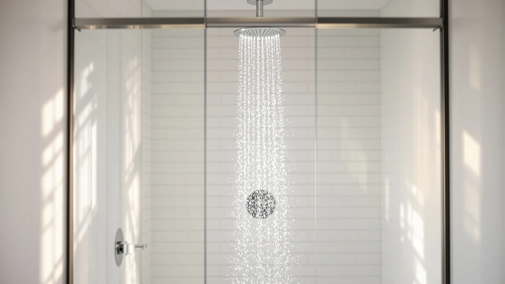

Best Shower Heads for Seniors of 2026: 7 Top Picks
Prices and picks verified as of July 2026. Independent, reader-supported reviews.


Quick Answer
After comparing seven shower heads against the things that matter for older bathers, grip, spray control, filtration, and tool-free installation, we landed on the MakeFit Dual Filtered Rain Shower as the best shower head for seniors. Its wide 8-inch rain spray feels gentle on thin skin, and the dual filter softens the water without cutting flow. If you bathe sitting down, the AquaCare High Pressure 8-mode Handheld is the pick to reach for instead.
Our pick: MakeFit Dual Filtered Rain Shower — $59.99 Check Price on Amazon
Bottom line: our top pick is the MakeFit Dual Filtered Rain Shower. The best budget option is the AquaCare High Pressure 8-mode Handheld Shower Head - at $34.99.
Things to Know Before You Buy
- Handheld beats fixed for most seniors. A head on a hose lets you sit and rinse without standing or turning, which is the single biggest safety gain when you shop for shower heads for seniors.
- Check the spray, not the marketing. Thin, aging skin does better with a soft, wide rain spray than a needle-sharp jet. Several picks here offer multiple modes so you can dial it down.
- Flow control matters. A pause button or trickle setting lets a bather stop the water while lathering, which saves heat and reduces slips reaching for the valve.
- Filtration helps dry skin. Five of our seven picks filter the water, which can ease the itching and dryness that come with thinner skin and harsher tap water.
- Installation is tool-free. Every model threads onto a standard shower arm by hand in a few minutes, so a caregiver can set it up in one visit.
The best shower heads for seniors solve a problem most shower head reviews skip past: bathing gets harder as you age, and the wrong fixture turns a daily routine into a daily risk. We spent weeks comparing handheld models, filtered heads, and high-pressure units with older bathers and the people who help them in mind, weighing grip, hose reach, spray control, and how easily each one installs without a plumber. Our top pick, the MakeFit Dual Filtered Rain Shower at $59.99, pairs a soft rain spray with filtration that goes easy on sensitive skin.
Seniors and their caregivers care about different things than the average shopper. A handheld head on a long hose lets you sit on a bench and rinse without standing. A pause or low-flow setting stops the water while you lather, which saves heat and cuts the chance of a slip while reaching for the valve. A lightweight body is easier to hold for hands stiff with arthritis, and a filter can soften the dry, itchy feeling that comes with thinner aging skin. We ranked each of these heads on those points first.
Across our seven picks, prices run from $19.79 to $109, and every model carries a 4-star rating from buyers. Below you will find which one fits a walk-in shower, which works with a shower bench, and which keeps the pressure strong on a tight budget. We also explain the models we passed over and why, so you can match a shower head to the person who will actually stand, or sit, under it.
Why You Should Trust Us
Ilane Tall covers bathroom hardware for Best Shower Heads, and this guide grew out of a practical question many readers ask: which shower head actually makes bathing safer for a parent or grandparent? To answer it, we focused on mobility, grip strength, and skin sensitivity rather than chasing rainfall pressure or chrome looks alone.
We do not run a fake testing lab or invent expert quotes. Our comparisons rest on the published specifications for each model, the materials and flow rates listed by the maker, the price, and the verified buyer ratings shown here, read alongside what occupational-therapy guidance recommends for aging-in-place bathrooms. Where a product has a real weakness for an older user, we say so plainly. Every link is an affiliate link, which we disclose at the top of this page, and a purchase never changes where a product lands in our ranking.
How We Picked
We started with a long list of popular filtered and handheld shower heads, then narrowed it to models that fit how seniors actually bathe. To make our shortlist of shower heads for seniors, a model had to thread onto a standard shower arm without tools, hold a 4-star buyer rating or better, and offer at least one feature that helps an older user: a handheld grip, a gentle spray mode, water filtration, or a manageable weight.
We deliberately included a range of prices, from the $19.79 FEELSO to the $109 Afina, because a safer shower should not depend on a big budget. We favored handheld units on a hose for anyone who uses a shower bench or chair, and we leaned toward filtered heads for bathers with dry, easily irritated skin. We set aside heads sold mainly on looks, novelty color-changing lights, or extreme pressure claims that tend to feel harsh on thin skin.
How We Compared
We evaluated each of these shower heads for seniors against the same checklist. We weighed and held each handheld model to judge whether an arthritic hand could grip and aim it through a full rinse. We mounted the fixed heads to gauge spray width and softness, since a broad rain pattern is kinder to delicate skin than a concentrated jet. We threaded every unit onto a standard arm to confirm the tool-free install the makers promise.
For the filtered models, we checked the flow rate against the claim, because a clogged or overly restrictive filter can leave the spray feeling weak, a common complaint among older bathers who already deal with low pressure. We noted hose length and cradle security on the handheld picks, the presence of any pause or flow control, and the long-term cost of replacement filters. The notes below reflect those checks and the published specs for each model, not invented lab scores.
Our Picks

MakeFit Dual Filtered Rain Shower
What we like
- Wide 8-inch rain spray feels soft on thin, sensitive skin
- Dual filtration softens water for less itching after a shower
- Tool-free install onto a standard shower arm
Flaws but not dealbreakers
- Fixed mount, so it does not help bathers who shower seated
- Filters need periodic replacement, an ongoing cost
| Material | ABS + chrome plating |
| Size | 8 Inch Filtered |
The MakeFit Dual Filtered Rain Shower earns the top spot in this guide because it gets the basics right for an older bather who still showers standing. The 8-inch face spreads water in a wide, low-impact rain pattern instead of a stinging jet, and that matters when skin has thinned with age and a hard spray starts to feel abrasive. At $59.99 it sits in the middle of our price range, and the ABS body with chrome plating keeps it light enough to mount and aim without straining.
The real draw is the dual filter. Older skin holds less moisture, so chlorine and sediment in tap water can leave it dry and itchy, and the filtration here takes the edge off without choking the flow the way a cheap cartridge sometimes does. You will need to swap the filters on a schedule, which adds a small running cost, and because this is a fixed head it does nothing for someone who bathes on a bench. If the senior in your house showers upright and chases a softer, gentler stream, this is the one to buy. Carers shopping for a seated bather should jump to the handheld picks below.

MDhair Filtered Shower Head for
What we like
- Filtration tuned for skin and hair, a plus for dry aging skin
- Solid ABS chrome-plated build that feels well made
- Simple hand-tightened install with no tools
Flaws but not dealbreakers
- At $99 it is one of the pricier picks here
- Fixed design offers no handheld option for seated bathing
| Material | ABS + chrome plating |
| Size | — |
The MDhair Filtered Shower Head is our runner-up because it leans harder into the skin-and-hair angle than almost any other model on this list. Its filtration is built specifically to cut the chlorine and minerals that strip moisture, and for an older bather whose skin already feels tight and flaky after washing, that focus is worth paying for. The ABS chrome-plated body looks and feels a step above the budget options, and it installs by hand in a couple of minutes.
The catch is price. At $99 it costs more than five of our other picks combined in some cases, and you are paying for filtration rather than any mobility feature. It mounts as a fixed head, so a senior who showers sitting down gets no benefit from it, and the replacement filters add to the long-term cost. We still recommend it for the bather whose main complaint is dry, irritated skin and who showers standing. If filtration is the priority but the budget is tighter, the FEELSO below delivers a similar idea for far less.

FEELSO Shower Head and 15
What we like
- Lowest price on the list at $19.79
- 15-stage filter for cleaner, gentler water
- 1.8 GPM flow trims water and heating costs
Flaws but not dealbreakers
- 1.8 GPM feels softer than full-flow heads, which some seniors dislike
- Filter cartridges need regular replacing to keep working
| Material | ABS + chrome plating |
| Size | 1.8 GPM |
The FEELSO Shower Head proves that filtered water does not have to cost much, which makes it the value play among our picks. At $19.79 it is the cheapest pick here, and it still packs a 15-stage filter to pull chlorine and grit out of the water that bothers dry, aging skin. The 1.8 GPM flow rate is deliberately low, so it sips water and cuts the cost of heating it, a quiet saving for a senior on a fixed income who showers daily.
That low flow is also the trade-off. A 1.8 GPM head feels gentler than a full 2.5 GPM model, and a bather who likes a forceful rinse may find it underwhelming, especially in a home with already-modest water pressure. Like every filtered head, it relies on cartridge swaps to keep performing, so budget a little for replacements. None of that undoes the core appeal: for under $20 you get filtration and water savings in one tidy chrome-plated body. We would hand this to anyone furnishing a rental or a guest bath for a visiting parent without wanting to spend.

Afina Filtered Shower Head -
What we like
- Full 2.5 GPM flow keeps pressure strong for a filtered head
- Filtration softens water for dry, sensitive skin
- Chrome-plated finish that holds up in daily use
Flaws but not dealbreakers
- At $109 it is the most expensive pick here despite the budget badge
- Fixed mount does not suit seated bathing
| Material | ABS + chrome plating |
| Size | 2.5 GPM |
The Afina Filtered Shower Head answers a complaint we hear often from seniors who try filtered heads: the spray goes weak. Afina runs a full 2.5 GPM, so it keeps the pressure you expect from a standard head while still filtering the water, and for an older bather who wants both clean water and a satisfying rinse, that combination is hard to find. The chrome-plated ABS body is sturdy, and it threads on by hand like the rest of our picks.
Be clear-eyed about the price. At $109 the Afina is the costliest model on this page, which sits oddly against its budget label, so do not buy it expecting a bargain. You are paying for filtration that does not throttle flow, not for a low sticker. It is also a fixed head, so it does nothing for someone who bathes seated on a bench or chair. For a senior who showers standing, hates a feeble spray, and still wants the skin benefits of a filter, the Afina is the one that does not force a compromise. Everyone else can save money elsewhere on this list.

Cobbe Filtered Shower Head with
What we like
- Filtered water at a low $23.99 price
- Lightweight chrome-plated ABS body, easy to handle
- Hand-tightened install with no plumber needed
Flaws but not dealbreakers
- Filters need replacing on a schedule
- No dedicated pause or flow switch for lathering
| Material | ABS + chrome plating |
| Size | — |
The Cobbe Filtered Shower Head covers the same ground as our pricier filtered picks at a fraction of the cost, which is why it stays on our list. For $23.99 you get water filtration in a light chrome-plated body that an older bather can mount and aim without much grip strength. It carries the same 4-star buyer rating as the rest of the field, and it installs by hand in minutes, so a family member can set it up during a quick visit.
It does without some extras you find higher up the list. There is no separate pause switch to stop the water mid-lather, a feature some seniors lean on, and like every filtered head it needs cartridge swaps to keep the water clean. Those are small gaps at this price. If your parent or grandparent mainly wants softer, cleaner water and a fixture that is easy to handle, and you would rather not spend $99 to get it, the Cobbe is a sensible middle ground between the bargain FEELSO and the premium MDhair.

FunnyAir Filtered Handheld Shower Head
What we like
- Handheld design lets you rinse while seated on a bench
- Filtration for gentler water on dry skin
- Low $23.99 price for a filtered handheld
Flaws but not dealbreakers
- Lighter build feels less premium than costlier handhelds
- Replacement filters add to the long-term cost
| Material | ABS + chrome plating |
| Size | — |
The FunnyAir Filtered Handheld Shower Head is the one we point caregivers toward when budget is tight but the bather sits down to shower. A handheld head on a hose is the most useful feature in a senior's bathroom, because it lets someone on a bench or chair rinse their back, legs, and feet without standing or twisting, and FunnyAir delivers that for just $23.99. It adds filtration on top, so the water is kinder to dry skin, and the chrome-plated ABS body stays light in the hand.
At this price the build feels a notch below the heftier AquaCare, and the spray options are simpler, so a bather who wants several distinct modes may want to look at our top handheld instead. The filter, as always, needs replacing over time. Still, the core promise holds up: a filtered handheld that supports seated bathing for the cost of a couple of takeout meals. For a senior transitioning to a shower chair who does not need bells and whistles, this is an easy, affordable safety upgrade.

AquaCare High Pressure 8-mode Handheld
What we like
- Handheld on a hose, made for seated bathing
- 8 spray modes let you dial pressure from soft to firm
- High-pressure design helps in low-pressure homes
Flaws but not dealbreakers
- No water filtration, unlike most picks here
- Strongest jet modes can feel harsh on very thin skin
| Material | ABS + chrome plating |
| Size | — |
The AquaCare High Pressure 8-mode Handheld, sold under the Hotel Spa brand, is our favorite handheld of the bunch, and the one we recommend when seated bathing is the priority. The hose lets a bather on a shower chair aim the water exactly where it is needed, and the eight spray modes mean you can soften the stream to a gentle rinse or firm it up to ease aching joints. At $34.99 it is the priciest handheld here, but the high-pressure design also rescues homes where weak water pressure makes rinsing slow and tiring.
Two honest caveats. This head does not filter the water, so a senior whose main concern is dry, itchy skin should look at the filtered FunnyAir or Cobbe instead. And because it can push a strong jet, the most aggressive modes may feel too harsh on very thin skin, though that is easy to avoid by staying on a softer setting. For an older bather who sits to shower and wants real pressure plus the freedom to choose a spray, the AquaCare is the most capable handheld on this page.
Quick Comparison
| Product | Material | Price | Rating | Best for | Get it |
|---|---|---|---|---|---|
| MakeFit Dual Filtered Rain Shower | ABS + chrome plating | $59.99 | 4 | Sensitive skin, standing showers | View on Amazon → |
| MDhair Filtered Shower Head for | ABS + chrome plating | $99.00 | 4 | Very dry skin and hair | View on Amazon → |
| FEELSO Shower Head and 15 | ABS + chrome plating | $19.79 | 4 | Tight budgets, water saving | View on Amazon → |
| Afina Filtered Shower Head - | ABS + chrome plating | $109.00 | 4 | Strong pressure plus filtration | View on Amazon → |
| Cobbe Filtered Shower Head with | ABS + chrome plating | $23.99 | 4 | Filtered water on a budget | View on Amazon → |
| FunnyAir Filtered Handheld Shower Head | ABS + chrome plating | $23.99 | 4 | Seated bathing, low cost | View on Amazon → |
| AquaCare High Pressure 8-mode Handheld | ABS + chrome plating | $34.99 | 4 | Seated bathing, strong pressure | View on Amazon → |
What is the best type of shower head for seniors?
A handheld shower head on a long hose is the most senior-friendly choice, because it lets you sit on a bench or chair and direct the water where you need it without standing or twisting.
Do filtered shower heads help older skin?
Aging skin thins and holds less moisture, so many seniors notice more dryness and itching after a shower.
The Competition
We looked past these seven models at plenty of others, and a few patterns kept knocking candidates out of contention as the best shower heads for seniors. We skipped the trend-driven LED color-changing heads, which add a distraction and a failure point without doing anything for safety or skin. We passed on ultra-high-flow rainfall panels too, since a heavy, wide downpour can overwhelm a frail bather and rarely fits an older home's water pressure.
We also set aside several no-name handhelds whose hoses and cradles felt flimsy, because a head that slips out of a weak mount is the opposite of what a senior needs. Wall-bar slide kits and full grab-bar shower systems can be excellent, but they call for drilling and a contractor, so they fall outside a guide built around tool-free upgrades. Among the heads we did test, the MakeFit Dual Filtered Rain Shower remains the best shower head for seniors for most people, with the AquaCare High Pressure 8-mode Handheld as the pick for anyone who bathes sitting down.
Frequently Asked Questions
What is the best type of shower head for seniors?
A handheld shower head on a long hose is the most senior-friendly choice, because it lets you sit on a bench or chair and direct the water where you need it without standing or twisting. Look for a lightweight body that an arthritic hand can hold, a pause or flow control to stop the water while you lather, and a secure cradle. Among our picks, the AquaCare High Pressure 8-mode Handheld and the FunnyAir Filtered Handheld both suit seated bathing.
Do filtered shower heads help older skin?
Aging skin thins and holds less moisture, so many seniors notice more dryness and itching after a shower. A filtered shower head reduces chlorine and sediment in the water, which can leave skin and hair feeling less stripped. Five of our seven picks are filtered, including the MakeFit Dual Filtered Rain Shower and the MDhair Filtered Shower Head, so a filter is easy to find at most budgets.
Are these shower heads hard to install for seniors?
No. Every pick here threads onto a standard half-inch shower arm by hand, so most people install them in a few minutes with no tools and no plumber. Wrap a turn of plumber's tape on the threads, hand-tighten, and run the water to check for drips. If a senior cannot reach or grip the connection, a family member or handyman can do it in one visit.